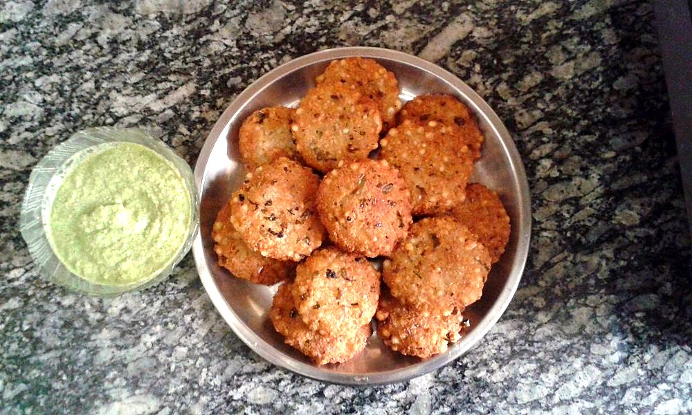

Contains: milk, tree nuts, mustard
Ingredients
Quantities for 4.
- 300g, white, peeled and grated on the coarse side Radishmujh; young radish is milder
- 100g, shelled halves Walnuts
- 150g, thick and cold, whisked smooth Yogurt
- 2, stems removed Green Chilli
- 1/2 tsp Kashmiri Chillifor colour more than heatoptional
- 1 tsp, raw Mustard Oila Kashmiri finish; leave it out if raw mustard oil is too sharp for youoptional
- 3/4 tsp, plus 1/2 tsp for drawing out the radish Salt
- 2 tbsp, for grinding Water
Cookware
blender
Checked against the ingredient list for ten allergens: milk, egg, fish, crustaceans, tree nuts, peanuts, sesame, mustard, soy and gluten. Brands vary, so read the label on anything new to you.
Before you start
- Grate the radish, toss it with 1/2 tsp salt and leave it in a sieve for 15 minutes, then squeeze it dry in your hands. This removes the bitter liquid and stops the chutney turning watery.
- Soak the walnuts in hot water for 10 minutes and rub off any loose skins if you want a paler, sweeter paste.
- Keep the yogurt in the fridge until the last moment; this is served cold.
Method
- Squeeze the salted radish hard between your palms and discard the liquid that runs out.Squeeze twice. Any water left behind will thin the chutney within an hour.
- Blitz the walnuts and green chillies with the 2 tbsp water to a coarse, damp paste, stopping before it turns oily.Pulse in short bursts. Walnuts go from paste to butter in seconds.
- Tip the paste into a bowl and fold in the squeezed radish.
- Whisk the yogurt separately until it is smooth and pourable, then fold it in a spoonful at a time.
- Season with the remaining salt and taste; it should be sharp, nutty and only faintly hot.
- Sprinkle over the Kashmiri chilli and trickle the raw mustard oil across the surface without stirring it in.The mustard oil is meant to hit the nose first. Stirring it through flattens the effect.
- Chill for 20 minutes before serving with tehar, rice or nadru monje.
Storage
Best the day it is made. Keeps 2 days refrigerated in a covered bowl but loosens as it sits. Pour off any liquid and stir before serving. Do not freeze.
Nutrition Good estimate
Low protein: 6 g a serving, 11% of the calories
| Per serving150 g | Per 100 g | |
|---|---|---|
| Calories | 210 kcal | 141 kcal |
| Protein | 5.7 g | 4 g |
| Carbohydrate | 8.1 g | 5 g |
| of which sugars | 4.0 g | 3 g |
| Fibre | 3.0 g | 2 g |
| Fat | 18.8 g | 12 g |
| of which saturated | 2.5 g | 2 g |
| of which unsaturated | 15.4 g | 10 g |
Estimated from raw ingredients using USDA FoodData Central.
More like this: Quick Indian recipes (30 min) · Vegetarian Indian recipes · Gluten-free Indian recipes · No onion no garlic recipes · Kashmiri recipes
Times, yields, allergens and nutrition are guidance. Use your own judgement on doneness and on storing. More in About.